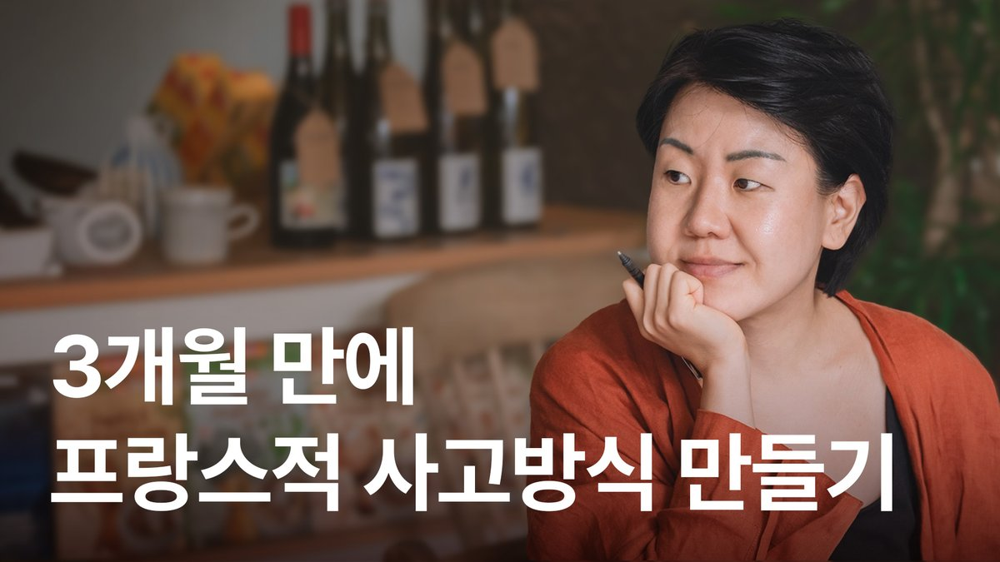
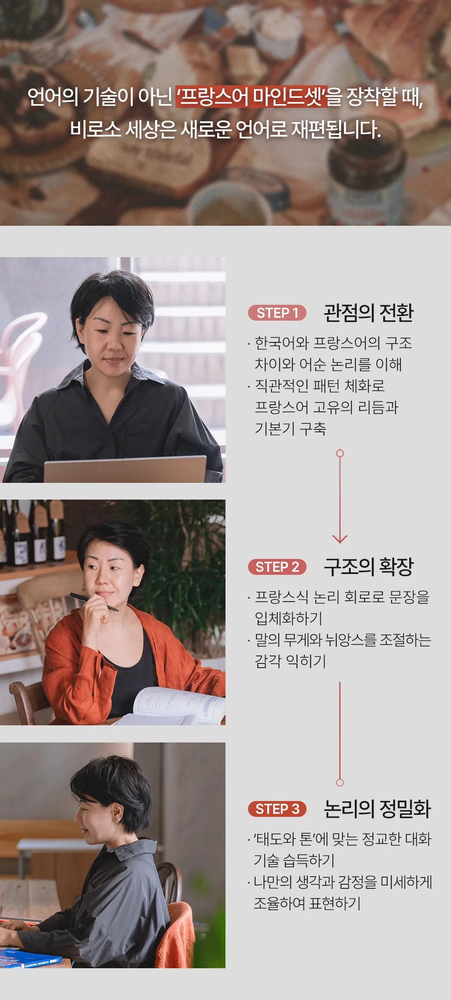
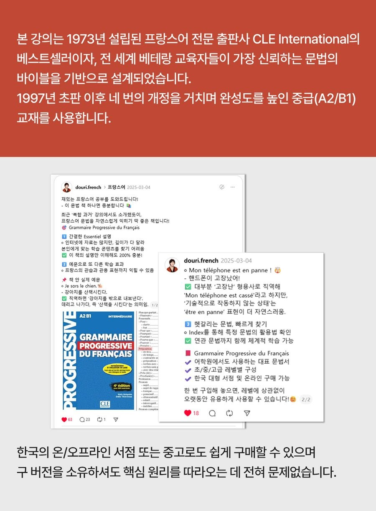
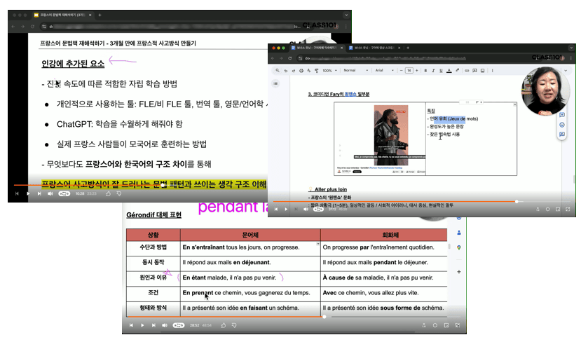

📘 CLASS101 인강
프랑스어의 바이블
문법책 재해석하기
프랑스어를 외우지 않고, 프랑스어로 사고하게 되는 3개월.

프랑스
전 세계 학습자를 관찰한 현장 감각
브라질
라틴계 사고구조까지 포착한 비교 데이터
한국
직역 회로를 해체한 경험
언어는 단어의 문제가 아니라,
사고방식의 문제입니다.
프랑스, 브라질, 한국에서 약 20년 동안 서로 다른 언어 환경 속에 있었습니다. 세 나라를 오가며 확실해진 것이 하나 있습니다. 말이 막히는 지점은 아는 단어의 수가 아니라, 그 언어가 세상을 나누는 방식이라는 것입니다.
저는 인문학이나 언어학을 전공하지 않았습니다. 그래서 오히려 더 집요하게 어떻게 하면 실제로 말하게 되는지를 파고들었습니다. 지난 15년 동안 학습자 한 명 한 명에 맞춘 튜터링과 코칭을 이어오면서, 한국 학습자의 고충이 유난히 크다는 것을 확인했습니다. 개인의 문제가 아니라 접근 방식의 차이입니다.

왜 '문법'으로 푸는가
저는 프랑스어로 생각하는 수단으로 '문법책'을 사용합니다.

다만 우리가 알던 방식이 아니라
이 두 가지를 연결해서 접근합니다.
40챕터 3개월 여정
40
핵심 챕터
+ 보너스 3챕터
8주
총 여정
어학원 3개월 분량 압축
각 챕터마다 핵심 아이디어, 마무리 아이디어, 그리고 직접 해보는 미션까지 구성되어 있습니다. 주차를 눌러 유닛을 확인해 보세요.
주 1 프랑스어 기초 동사와 문장 구조
1
être 동사: 프랑스어의 매력 파헤치기
| 주어와 발음의 특징 알기
릴스 보기
주 2 표현 확장: 부정, 의문, 소유, 가족
7
명사, 관사 + 국가: 프랑스의 성별 논쟁
| 영어, 한국어와의 관사 개념 비교
릴스 보기
주 3 지시사, 부정관사 정리 + 첫 동사 변화(ER)
주 4 불규칙 동사 마스터 + 조건법, 비교급
18
조건법 (pouvoir, vouloir, devoir): 프랑스식 예의 🕹
| 상대를 배려하는 '거리' 만들기
릴스 보기
주 5 관용구, 전치사 심화 + 복합과거 입문
주 6 대명사 완전 정복: 재귀, 관계, 간접
주 7 간접 화법부터 복합과거 심화, 미래와 반과거까지
주 8 고급 문법 완성: 접속법, 대과거, 조건법과거
🎁 보너스 챕터 (3개)
Bonus 1: 모든 대명사 복습
Bonus 2: 모든 시제 복습, 활용 연습
Bonus 3: 구어체 레지스터에 익숙해지기 (영상 3개 스크립트 PDF 제공)
프랑스어 문법책 재해석하기 인강 미리보기

- 인트로 영상: 어떤 의도를 가지고 만들었는지, 어떠한 내용을 어떻게 학습하는지, 누구에게 더 도움이 될 수 있는지 인강의 의도 이해하기
- 20일차 영상: 동시성, 과거와 미래를 미세하게 뉘앙스있게 표현하기, 뉴스나 회사 공지문, 일상에서 다양한 문체로 표현하기, 원어민스러운 패턴 알아보기
- 보너스 3 영상: 실제 프랑스 사람들이 접하는 영상 세 개의 스크립트로 구어체의 특징 알아보기, 인강에서 배웠던 레지스터 복습하기

개념 정리, 뉴스와 공지문 예시, 회화체와 문어체 비교, 연습 문제, 심화 작문, 정답과 해설이 담겨져 있습니다.
학습 스타일에 맞는 수강권
| 5개월 수강 | 평생 소장 | 챌린지 프로그램 곧 오픈 |
|
|---|---|---|---|
| 40 챕터 | 5개월 무제한 시청 | 평생 무제한 시청 |
얼리버드 혜택을 놓치지 마세요! |
| 강의 자료 PDF | ✅ 제공 | ✅ 제공 | |
| 혜택 |
오픈카톡방 질의응답 무제한 |
1:1 레슨 3회 제공 (60분, 30만원 상당) |
|
| 이런 분께 권장 |
이머시브로 집중 학습 마감형 / 몰입형 |
내 페이스로 길게 자기주도형 / 완벽주의형 |
자주 묻는 질문
Q. 5개월 수강과 평생 소장, 어떻게 다른가요?
5개월 수강
- 기간이 정해져 있어서 끝까지 갑니다
- 오픈카톡방에서 막히는 부분을 바로 질문
- 같이 듣는 분들과 함께 완주
제가 어려웠던 부분은 남들에게도 어렵습니다.
평생 소장
- 강의가 사라지지 않습니다
- 지금 A2에서 듣고, 1년 뒤 B1에서 다시 들으면 보이는 게 완전히 달라집니다
- 저와 1:1 수업 3회(30만원 상당)가 붙습니다
개인적 심화가 필요한 지점은 1:1 수업에서 짚어드립니다.
Q. 이미 어느 정도 배운 상태인데, 특정 챕터만 들을 수 있나요?
이미 알고 있는 40챕터를 처음부터 다시 들으실 필요는 없어요. 상세 커리큘럼을 보시고 어느 챕터가 필요한지 알려주시면, 그 부분만 설계해 드립니다. 챕터별 1:1 특강 문의하기 문의하기
Q. 교재에 있는 연습 문제 풀이도 이루어지나요?
혼자 못 하는 건 "왜 이렇게 쓰는지"입니다. 이 인강은 문제 풀이가 아니라, 프랑스어의 구조와 사고 체계를 정립하는 데 시간을 씁니다. 그게 잡히면 문제는 저절로 풀립니다.
외우지 않고 프랑스어로 사고하게 됩니다
완벽한 타이밍은 없어요, 챕터 1 바로 시작하기!챕터별 1:1 특강
1:1 특강 문의하기
어느 챕터가 필요하신지 알려주시면, 그 부분만 설계해 드립니다.
폼이 안 보이시나요? 새 창에서 열기 →
챌린지 프로그램
대기 신청하기
얼리버드 혜택을 놓치지 마세요. 오픈하면 가장 먼저 알려드립니다.
폼이 안 보이시나요? 새 창에서 열기